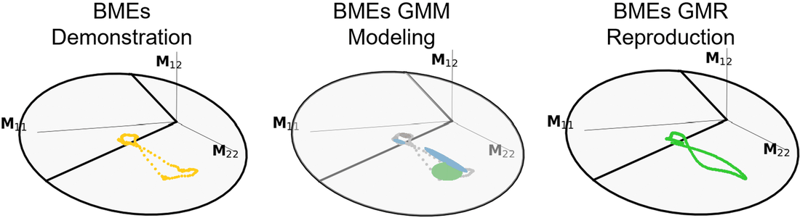

ManiDP (IROS 2025, arXiv 2510.23016) is an imitation-learning method that augments a conditional diffusion policy with awareness of robot manipulability for posture-dependent bimanual (dual-arm) manipulation. The core observation is that standard diffusion policies imitate end-effector trajectories but ignore the dual-arm configuration/posture needed to actually exert the right forces and motions for a task. ManiDP extracts bimanual manipulability ellipsoids from expert demonstrations, encodes these posture features with a Riemannian probabilistic model defined on the SPD (symmetric positive definite) manifold, and uses them to guide the diffusion sampling so generated trajectories not only look plausible but also place the arms in task-compatible postures. Authors: Zhuo Li, Junjia Liu, Dianxi Li, Tao Teng, Miao Li, Sylvain Calinon, Darwin Caldwell, Fei Chen.
Manipulability ellipsoid (ME): a posture-dependent measure of how well a robot configuration can generate motion/force in given directions. ManiDP defines two bimanual variants: Bimanual Absolute Manipulability (BAM) for symmetric tasks where both arms act as one unit, and Bimanual Relative Manipulability (BRM) for asymmetric tasks built from relative Jacobians between the arms. SPD-manifold geometry: bimanual manipulability ellipsoids are 3x3 symmetric positive definite matrices, which do not live in a flat Euclidean space but on the cone-shaped S++ (SPD) manifold. ManiDP respects this geometry — ellipsoids interpolate along geodesics on the manifold rather than straight Euclidean lines, avoiding distortion. Riemannian probabilistic model: posture features are encoded with an SPD Gaussian Mixture Model (SPD-GMM) and SPD Gaussian Mixture Regression (SPD-GMR), using Riemannian operations — logarithmic map (Log), exponential map (Exp), and parallel transport — to project SPD points into tangent spaces, do the statistics there, and map back. Manipulability-guided diffusion: the desired manipulability profile conditions a diffusion policy via classifier-style guidance. A cost G = ||Log_{Bt}(B_hat_t)||_F^2 measures the SPD geodesic distance between the policy's current and the expert's target ellipsoids, and its gradient steers the denoising step (mean shifted by lambda * Sigma * g) toward task-compatible postures. The method separates 'plausible trajectory generation' (what standard diffusion policy does) from 'dual-arm posture optimization' (the manipulability term), letting it simultaneously imitate motion and satisfy posture-dependent task requirements.
Introduces a manipulability-aware conditional diffusion policy that extracts bimanual manipulability from demonstrations and injects it as Riemannian-encoded guidance, achieving a reported 39.33% increase in average manipulation success rate over baselines. Reported real-robot Manipulation Success Rate (MSR): ManiDP 85.00% overall vs. 56.33% for Diffusion Policy (DP) and 53.33% for ACT. Introduces a Task Compatibility Index (TCI), normalized to [0,1], measuring alignment of dual-arm postures with task requirements; ManiDP averages 0.92 +/- 0.03 vs. 0.53 +/- 0.04 for DP (about a 0.45 improvement in task compatibility). On Manipulability Reproduction Accuracy (MRA), the SPD-manifold model strongly outperforms a Euclidean classical GMM-GMR — e.g. 0.91 +/- 0.01 vs. 0.58 +/- 0.02 (Plate Wiping) and 0.93 +/- 0.04 vs. 0.65 +/- 0.03 (Towel Hanging) — validating the SPD-manifold formulation over Euclidean processing. Defines BAM and BRM formulations to handle both symmetric (arms as a unified entity) and asymmetric (relative-Jacobian) bimanual tasks within one framework. Validated on six real-world bimanual tasks against ACT, original Diffusion Policy, and a Euclidean GMM-GMR baseline.
ManiDP is demonstrated on six real-world dual-arm tasks: Plate Wiping, Plug Removal, and Charger Plugging (asymmetric), plus Water Pouring, Box Lifting, and Towel Hanging (symmetric). In these demos it generates bimanual motion sequences while steering the two arms into postures with the right manipulability for each task, outperforming ACT, Diffusion Policy, and a Euclidean GMM-GMR baseline on success rate and posture/task-compatibility metrics.
Figure is the paper's own teaser, captured from the paper or project page for personal study; PDFs/videos are not hosted here (buttons link out). Summary is my paraphrase from the abstract, full text and project page — see the paper for specifics. Credit: the original authors.